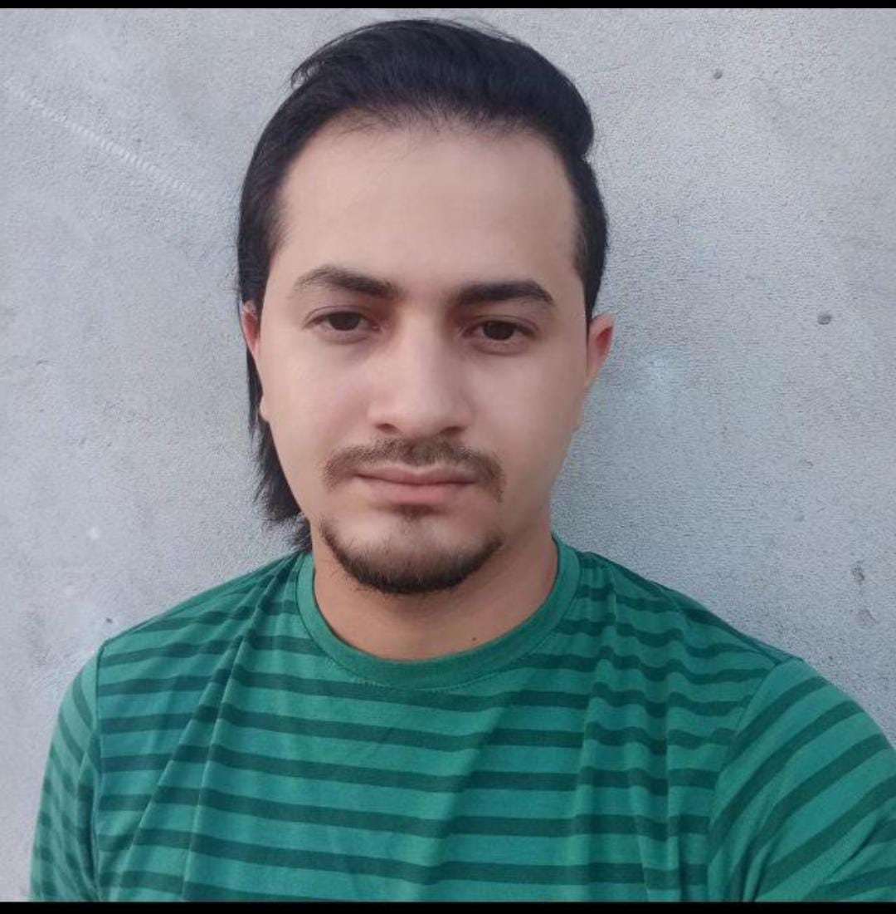

Yuri Gabriel Pereira Cerqueria

Sobre
Atualmente estou me especializando na área de Desenvolvimento de Software e Desenvolvimento Web HTML5, CSS, Java, C#
Educação
- Uniasselvi
Desenvolvimento de jogos digitais
- Udemy
-
Web Development Full Stack HTML, CSS, Javascript, Node, React, PostgreSQL, Web3 and DApps
- Ingles Avançado
- Desenvolvimento de jogos 2D com C#
Experiência Profissional
- Sócio
R.M.C CONSTRUÇÃO E EMPREENDIMENTOS LTDA
Sócio Empresarial:
Como sócio da empresa, desempenho um papel essencial na condução de acordos estratégicos, estabelecimento de contatos-chave e formalização de contratos por meio de assinaturas legais. Minha atuação é pautada pela busca de parcerias e oportunidades que impulsionem o crescimento e a consolidação do negócio.
Assinaturas e Formalizações:
Responsável pela finalização de acordos por meio da formalização legal, assegurando que os processos estejam em conformidade com as regulamentações vigentes. Atuação direta na assinatura de contratos, garantindo a segurança jurídica das relações comerciais da empresa.
- Técnico de TI
UNIASSELVI
Sócio Empresarial:
Técnico em TI com sólida atuação na parte técnica de computadores, oferecendo suporte e soluções eficientes para questões relacionadas a hardware, software e redes. Proficiente no diagnóstico e resolução de problemas, garantindo o pleno funcionamento dos sistemas.
Atendimento ao cliente:
Ampla experiência em atendimento ao cliente, fornecendo assistência personalizada e eficaz, tanto presencialmente quanto remotamente, tentando sempre compreender as necessidades dos usuários e oferecer suporte técnico adequado.
Inscrições e divulgação de cursos:
Participação ativa na divulgação e inscrições para cursos oferecidos pela Universidade, utilizando habilidades de comunicação e marketing para alcançar potenciais alunos. Engajamento em atividades de promoção e organização de eventos relacionados à educação e capacitação profissional.
Habilidades
- Relacionamento interpessoal
- técnicas de comunicação
- Aprendizado contínuo
- Adapatabilidade
- Inteligência emocional
Contato
- Número
- LinkedIn
- https://www.linkedin.com/in/yuri-cerqueira-015654254/
- E-mail